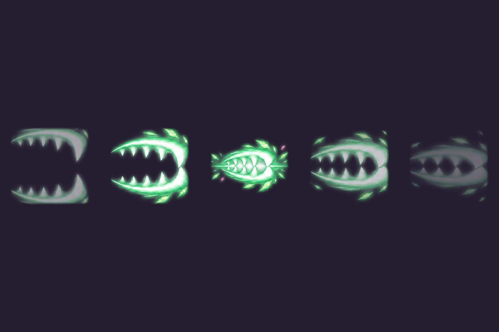
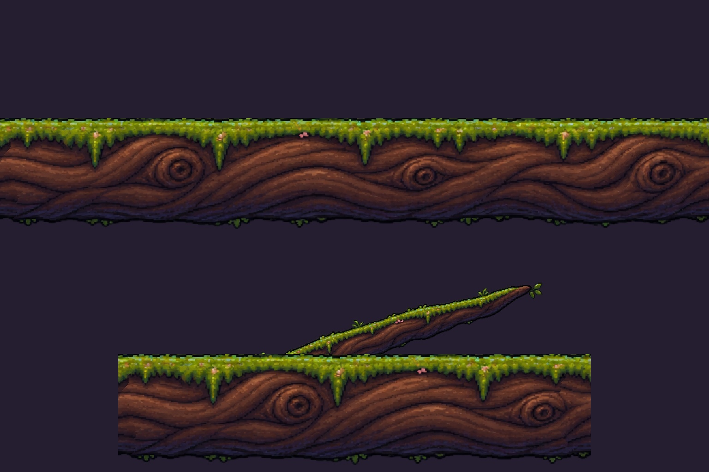
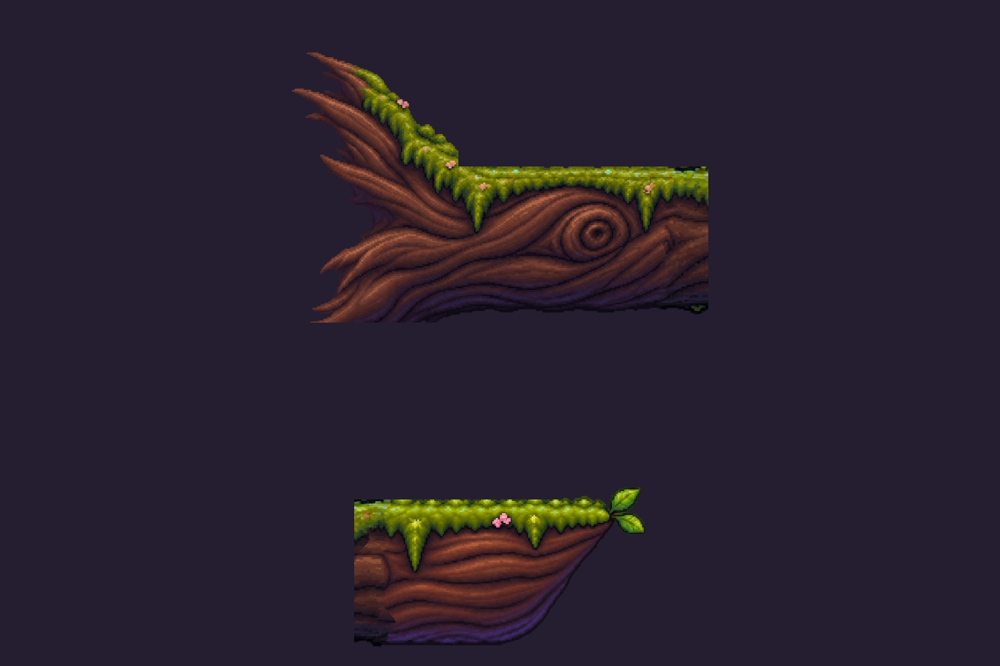
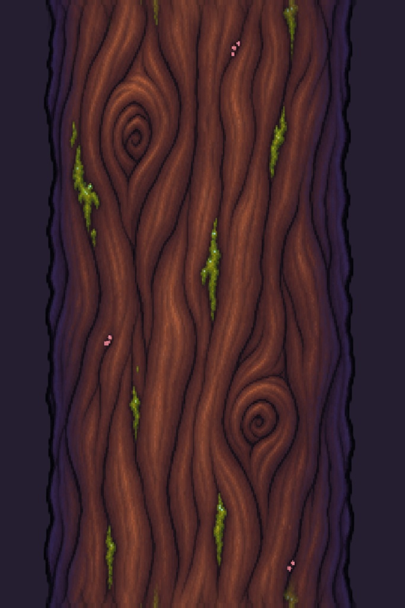
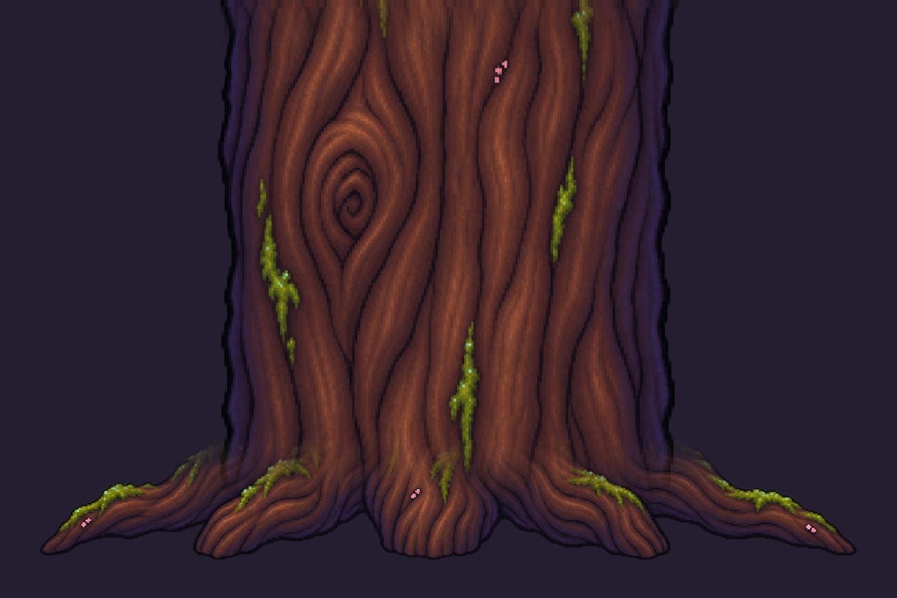
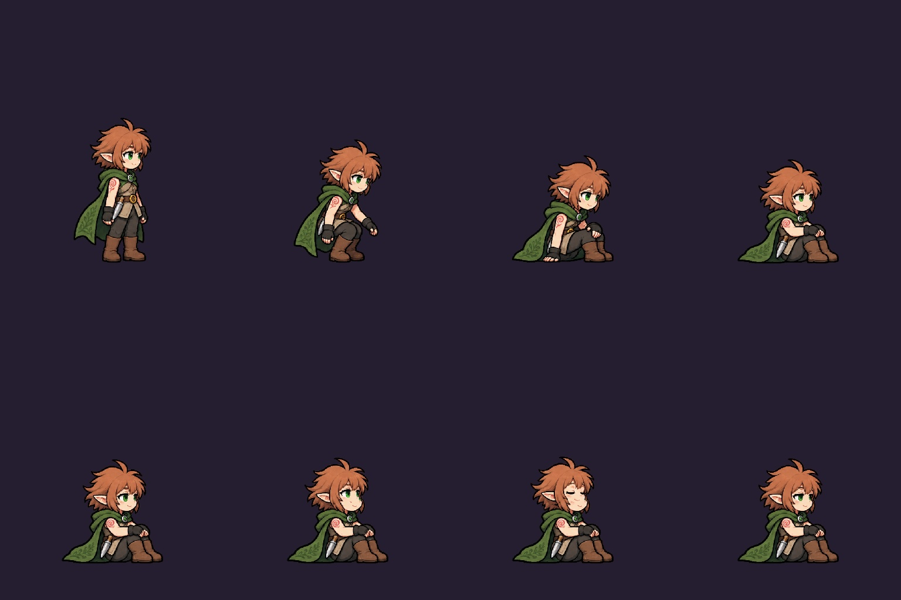
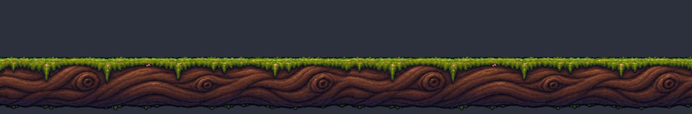
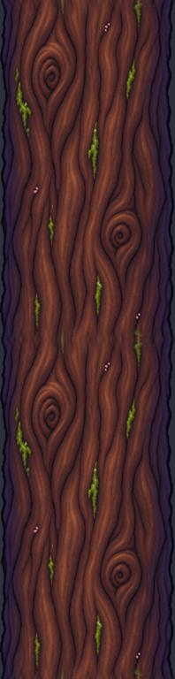
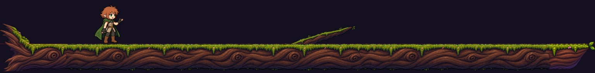
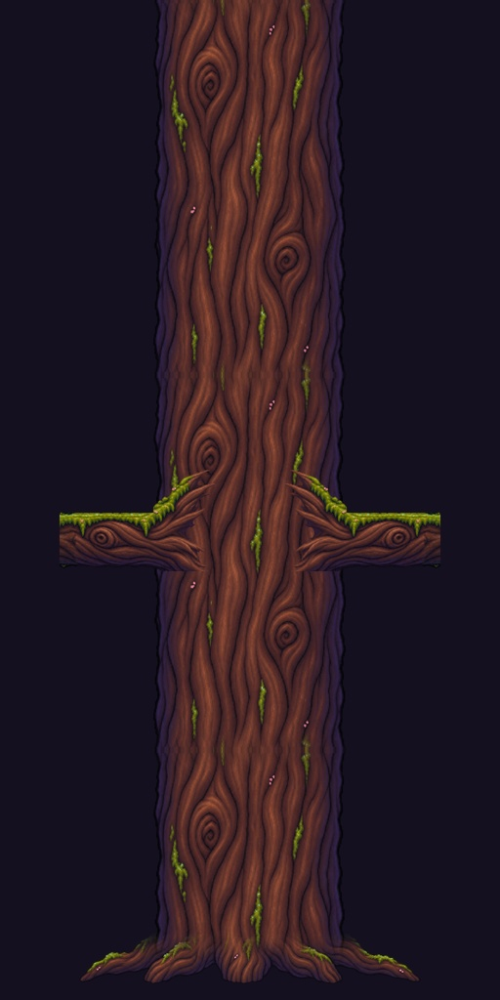

Lot 11 — crocs, branches et repos
1 — assets/vfx/vfx_croc.png

Import
2 — assets/_codex_src/branches_milieu_fourche.png

Import
3 — assets/_codex_src/branches_base_bout.png

Import
4 — assets/_codex_src/tronc_segment.png

Import
5 — assets/_codex_src/tronc_base.png

Import
6 — assets/sprites/agarica_repos.png

Import
Contrôles après import
raccord_branche_milieu

raccord_tronc_segment

assemblage_branche

assemblage_tronc

Respiration — contrôle
Audit